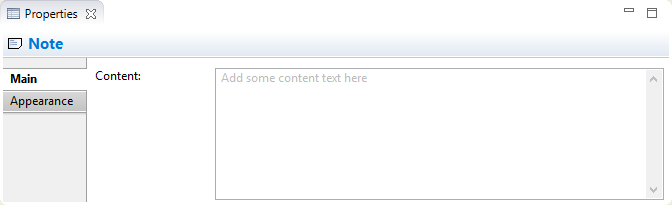
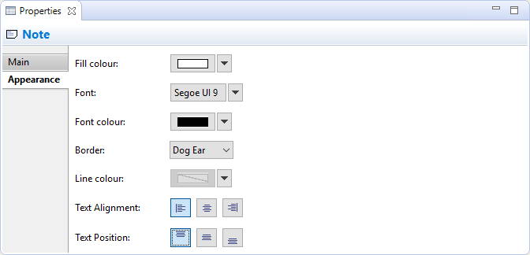

Sélectionner une note dans une vue signifie que vous pouvez modifier ou consulter les propriétés suivantes dans la fenêtre des propriétés.
L'onglet principal
Modification des propriétés "principales" d'une note
| Contenu: | Le contenu textuel de la note |
L'onglet Apparence
Modification des propriétés d'apperence de la note
| Couleur de fond: | Définit la couleur de fond pour l'élément sélectionné. Le bouton "Défaut" définit la couleur de fond conformément à la valeur par défaut. |
| Police de caractères: | Définit la police de caractères utilisée pour le texte dans l'élément sélectionné. Le bouton "Défaut" définit la police de caractères conformément à la valeur par défaut telle que définir dans les préférences. |
| Couleur de la police de caractères: | Définit la couleur de la police de caractères pour le texte de l'élément sélectionné. Le bouton "Défaut" définit la couleur de la police de caractères conformément à la valeur par défaut. |
| Bordure: | Définit le type de bordure. Peut être soit "oreille de chien", "rectangle" ou "aucun". |
| Couleur des lignes: | Définit la couleur de ligne utilisée pour dessiner l'élément sélectionné. Le bouton "Défaut" définit la couleur de la ligne conformément à la valeur par défaut. Si cette option est désactivée, c'est parce que les couleurs des lignes sont dérivées de la couleur de fond de l'élément, comme défini dans les préférences. |
| Alignement du texte: | Aligne le texte dans l'élément sélectionné à gauche, au centre ou à droite. |
| Position du texte: | Aligne le texte dans l'élément sélection en haut, au mileu ou en bas. |